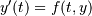

scipy.integrate.ode¶
- class scipy.integrate.ode(f, jac=None)[source]¶
A generic interface class to numeric integrators.
Solve an equation system  with (optional) jac = df/dy.
Parameters : f : callable f(t, y, *f_args)
Rhs of the equation. t is a scalar, y.shape == (n,). f_args is set by calling set_f_params(*args). f should return a scalar, array or list (not a tuple).
jac : callable jac(t, y, *jac_args)
Jacobian of the rhs, jac[i,j] = d f[i] / d y[j]. jac_args is set by calling set_f_params(*args).
See also
Notes
Available integrators are listed below. They can be selected using the set_integrator method.
“vode”
Real-valued Variable-coefficient Ordinary Differential Equation solver, with fixed-leading-coefficient implementation. It provides implicit Adams method (for non-stiff problems) and a method based on backward differentiation formulas (BDF) (for stiff problems).
Source: http://www.netlib.org/ode/vode.f
Warning
This integrator is not re-entrant. You cannot have two ode instances using the “vode” integrator at the same time.
This integrator accepts the following parameters in set_integrator method of the ode class:
- atol : float or sequence absolute tolerance for solution
- rtol : float or sequence relative tolerance for solution
- lband : None or int
- rband : None or int Jacobian band width, jac[i,j] != 0 for i-lband <= j <= i+rband. Setting these requires your jac routine to return the jacobian in packed format, jac_packed[i-j+lband, j] = jac[i,j].
- method: ‘adams’ or ‘bdf’ Which solver to use, Adams (non-stiff) or BDF (stiff)
- with_jacobian : bool Whether to use the jacobian
- nsteps : int Maximum number of (internally defined) steps allowed during one call to the solver.
- first_step : float
- min_step : float
- max_step : float Limits for the step sizes used by the integrator.
- order : int Maximum order used by the integrator, order <= 12 for Adams, <= 5 for BDF.
“zvode”
Complex-valued Variable-coefficient Ordinary Differential Equation solver, with fixed-leading-coefficient implementation. It provides implicit Adams method (for non-stiff problems) and a method based on backward differentiation formulas (BDF) (for stiff problems).
Source: http://www.netlib.org/ode/zvode.f
Warning
This integrator is not re-entrant. You cannot have two ode instances using the “zvode” integrator at the same time.
This integrator accepts the same parameters in set_integrator as the “vode” solver.
Note
When using ZVODE for a stiff system, it should only be used for the case in which the function f is analytic, that is, when each f(i) is an analytic function of each y(j). Analyticity means that the partial derivative df(i)/dy(j) is a unique complex number, and this fact is critical in the way ZVODE solves the dense or banded linear systems that arise in the stiff case. For a complex stiff ODE system in which f is not analytic, ZVODE is likely to have convergence failures, and for this problem one should instead use DVODE on the equivalent real system (in the real and imaginary parts of y).
“lsoda”
Real-valued Variable-coefficient Ordinary Differential Equation solver, with fixed-leading-coefficient implementation. It provides automatic method switching between implicit Adams method (for non-stiff problems) and a method based on backward differentiation formulas (BDF) (for stiff problems).
Source: http://www.netlib.org/odepack
Warning
This integrator is not re-entrant. You cannot have two ode instances using the “lsoda” integrator at the same time.
This integrator accepts the following parameters in set_integrator method of the ode class:
- atol : float or sequence absolute tolerance for solution
- rtol : float or sequence relative tolerance for solution
- lband : None or int
- rband : None or int Jacobian band width, jac[i,j] != 0 for i-lband <= j <= i+rband. Setting these requires your jac routine to return the jacobian in packed format, jac_packed[i-j+lband, j] = jac[i,j].
- with_jacobian : bool Whether to use the jacobian
- nsteps : int Maximum number of (internally defined) steps allowed during one call to the solver.
- first_step : float
- min_step : float
- max_step : float Limits for the step sizes used by the integrator.
- max_order_ns : int Maximum order used in the nonstiff case (default 12).
- max_order_s : int Maximum order used in the stiff case (default 5).
- max_hnil : int Maximum number of messages reporting too small step size (t + h = t) (default 0)
- ixpr : int Whether to generate extra printing at method switches (default False).
“dopri5”
This is an explicit runge-kutta method of order (4)5 due to Dormand & Prince (with stepsize control and dense output).
Authors:
E. Hairer and G. Wanner Universite de Geneve, Dept. de Mathematiques CH-1211 Geneve 24, Switzerland e-mail: ernst.hairer@math.unige.ch, gerhard.wanner@math.unige.chThis code is described in [HNW93].
This integrator accepts the following parameters in set_integrator() method of the ode class:
- atol : float or sequence absolute tolerance for solution
- rtol : float or sequence relative tolerance for solution
- nsteps : int Maximum number of (internally defined) steps allowed during one call to the solver.
- first_step : float
- max_step : float
- safety : float Safety factor on new step selection (default 0.9)
- ifactor : float
- dfactor : float Maximum factor to increase/decrease step size by in one step
- beta : float Beta parameter for stabilised step size control.
- verbosity : int Switch for printing messages (< 0 for no messages).
“dop853”
This is an explicit runge-kutta method of order 8(5,3) due to Dormand & Prince (with stepsize control and dense output).
Options and references the same as “dopri5”.
References
[HNW93] (1, 2) E. Hairer, S.P. Norsett and G. Wanner, Solving Ordinary Differential Equations i. Nonstiff Problems. 2nd edition. Springer Series in Computational Mathematics, Springer-Verlag (1993) Examples
A problem to integrate and the corresponding jacobian:
>>> from scipy.integrate import ode >>> >>> y0, t0 = [1.0j, 2.0], 0 >>> >>> def f(t, y, arg1): >>> return [1j*arg1*y[0] + y[1], -arg1*y[1]**2] >>> def jac(t, y, arg1): >>> return [[1j*arg1, 1], [0, -arg1*2*y[1]]]
The integration:
>>> r = ode(f, jac).set_integrator('zvode', method='bdf', with_jacobian=True) >>> r.set_initial_value(y0, t0).set_f_params(2.0).set_jac_params(2.0) >>> t1 = 10 >>> dt = 1 >>> while r.successful() and r.t < t1: >>> r.integrate(r.t+dt) >>> print("%g %g" % (r.t, r.y))
Attributes
t (float) Current time. y (ndarray) Current variable values. Methods
integrate(t[, step, relax]) Find y=y(t), set y as an initial condition, and return y. set_f_params(*args) Set extra parameters for user-supplied function f. set_initial_value(y[, t]) Set initial conditions y(t) = y. set_integrator(name, **integrator_params) Set integrator by name. set_jac_params(*args) Set extra parameters for user-supplied function jac. set_solout(solout) Set callable to be called at every successful integration step. successful() Check if integration was successful.